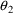
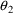

and
and
 ), some of the observations may be scaled incorrectly. This
is discussed in Chapter 6, Section 9, and Chapter 7, Section
4.3.3.
), some of the observations may be scaled incorrectly. This
is discussed in Chapter 6, Section 9, and Chapter 7, Section
4.3.3.Chapter 13 - Errors in NONMEM Runs
This chapter describes error messages that can appear in NONMEM’s output and discusses some possible causes and remedies. It is not encyclopedic; only selected messages are discussed. NM-TRAN messages are meant to be self-explanatory, as are many PREDPP messages, and important NONMEM messages are documented in NONMEM Users Guide, Part I, Chapter G. Unlike certain other regression programs, NONMEM-PREDPP will not try to mask what is perceived as a real problem and to which attention must be given by the user before the computation can proceed; an error message results and often, the program terminates.
The Estimation and Covariance Steps do not always terminate successfully. This is a normal part of the process of model building.
Normal termination of the Estimation Step is indicated by the message:
MINIMIZATION SUCCESSFUL
Even when this message is
seen, it is possible that the Estimation Step has not run
correctly. Final estimates should be different from initial
estimates. If the initial and final estimates are the same
and the gradients for a parameter are zero at every
iteration†, this is a sign of a modelling error. The
parameter does not affect any predictions, as discussed in
Chapter 7, Section 4.2. If there were bounds, estimates
should be well away from the bounds. A final estimate which
is close to a bound is discussed in Chapter 11, Section 4.3.
----------
† A gradient
may reach zero at or near the final iteration; this is not
an error. Note also that no gradient is computed or printed
for a parameter whose value is fixed, so if a gradient is
always zero, it is not for this reason.
----------
Abnormal termination of the Estimation Step is indicated by a message whose first line is:
MINIMIZATION TERMINATED
One of several messages will follow, indicating the type of failure. The messages are listed in Users Guide I.
Two of the most common are discussed here separately.
If after any iteration the total number of evaluations of the objective function (Chapter 10, figure 10.5, line 33) is equal to or greater than the maximum allowed (Chapter 10, figure 10.2, line 51), the minimization search is halted with this message. If the $ESTIMATION record requested that a Model Specification File be written, it is possible to continue the search from this point in a subsequent NONMEM run. In Chapter 12, Section 4.3, a strategy is discussed by which the number of function evaluations is deliberately set to a low value in order to structure a lengthy run as a series of shorter runs.
Whenever this message is obtained, it is important to examine the intermediate output and evaluate the progress made so far. A poorly-specified model, for example, may cause very slow convergence of the minimization search. Raising the maximum number of function evaluations (using the MAXEVAL option of the $ESTIMATION record) may not be advisable.
This message will be accompanied in the intermediate output by a message beginning: NUMSIGDIG: .... which gives the approximate number of significant digits obtained in each of the parameters being estimated. At least one such number will be less than the number requested.
The number of significant digits obtained should be examined. If it is at least 2, and the gradient vector appears stable throughout the last few iterations, a satisfactory minimum may well have been obtained. (It may be desirable to re-run the problem with the print interval for iteration summarization set to 1 (PRINT=1 in the $ESTIMATION record) so that the progress made at every iteration can be examined.) The final parameter estimates should be examined, and if they appear reasonable, they might be accepted. Although the user may have requested more than 2 significant digits, the data may only support about 2 digits, given the precision of the arithmetic being used. By examining the gradients carefully, it is often possible to obtain further information about which parameter estimates are less-well determined.
Even though the final parameter estimates may be adequate, it is unlikely that the minimum is sufficiently well-determined to allow the Covariance Step to run successfully, at least with the number of significant figures requested in the Estimation Step. The Estimation Step may need to be rerun, requesting only 2 significant figures, followed by the Covariance Step.
If the number of significant digits is less than 2 (or even negative), then the final estimates should not be trusted. The problem may be model misspecification or insufficient data.
Model misspecification is a very general problem involving some mismatch between the model and the data. This can result in particularly large values of the objective function or slow convergence of the minimization search. Sometimes the model is overparameterized. This means that the model has more parameters than can be well-enough estimated from the data (e.g., a biexponential model is fit to monoexponential data). When model misspecification occurs due to over-parameterization, then the Estimation Step will usually proceed smoothly, but terminate with fewer than 2 significant digits. It is best to start with simple models (see Chapter 11).
A related problem arises when a covariance element, e.g., (or ), is being estimated. If the ID (or L2 data item) is not used correctly, it may appear as though the covariance does not affect objective function values, and then this parameter will not be well estimated. In other words, it may appear as though the model is overparameterized due to the inclusion of this parameter. See Chapter 12, Section 4.2.
It is possible for the Estimation Step to terminate successfully, and yet the Covariance Step generates an error message. Error messages from the Covariance Step are printed immediately after line 46 of Figure 10.5. The messages are listed in Users Guide I.
When a message arises, often it is:
R MATRIX
ALGORITHMICALLY NON-POSITIVE-SEMIDEFINITE
BUT NONSINGULAR
COVARIANCE STEP ABORTED
In order for the minimization routine to terminate successfully, it needs to determine that the final gradient vector is sufficiently small, which is a necessary condition for a minimum to have been achieved. This condition, however, is not sufficient. A sufficient condition, that the R matrix be positive definite (and therefore, that the apparent minimum not be a saddle point) is only checked in the Covariance Step. The message means that the sufficient condition appears not to be satisfied. The final estimate is, therefore, in doubt.
Sometimes the message is:
R MATRIX
ALGORITHMICALLY SINGULAR
COVARIANCE STEP UNOBTAINABLE
S MATRIX ALGORITHMICALLY
SINGULAR
This arises when there exists a parameter whose values do not actually affect the predictions and whose gradient in the intermediate output is always 0.
In general, successful completion of the Covariance Step requires a better defined minimum than does the successful completion of the Estimation Step.
This section discusses a few simple errors which prevent NONMEM-PREDPP from running successfully.
A common error is to use the proportional error model while some predicted values for actual observations are zero or close to zero. (For example, if the first dose is an infusion and there is a "baseline" observation at the start of the infusion, the predicted level will be zero.)
With individual data this will lead to an error message similar to the following (the individual number may be different from 1):
PROGRAM TERMINATED
BY OBJ, ERROR IN ELS
WITH INDIVIDUAL 1 (IN INDIVIDUAL RECORD ORDERING)
VAR-COV OF DATA FROM INDIVIDUAL RECORD ESTIMATED TO BE
SINGULAR
With population data this will lead to an error message similar to the following (the individual and record numbers may be different than 1):
PROGRAM TERMINATED
BY OBJ, ERROR IN CELS
WITH INDIVIDUAL 1 (IN INDIVIDUAL RECORD ORDERING)
INTRAINDIVIDUAL VARIANCE OF DATA FROM OBS RECORD 1 ESTIMATED
TO BE 0
When using a new model, a
run should done in which the Estimation Step is not run, and
a scatterplot of PRED vs DV with unit slope line is
produced, to verify that the model and the initial parameter
estimates are reasonable. It is much harder to diagnose
errors in the model or the initial estimates after the
Estimation Step fails. Make sure that the initial value of
the objective function is not excessively large, and that
the unit slope line shows on the plot: scaling errors can
easily go undetected! E.g., if the units are incorrect at
some point in the model (L vs ml), the predictions may be
wrong by a factor of 1000. Similarly, if no scale was
specified for the compartment being observed, the
predictions for the observations are compartment amounts
rather than concentrations. In both cases, the shape of the
PRED vs DV plot may appear linear, but the axes may be
labeled quite differently. When observations from two
different compartments are present in the data (e.g.,
and
), some of the observations may be scaled incorrectly. This
is discussed in Chapter 6, Section 9, and Chapter 7, Section
4.3.3.
TRANS routines can
produce error messages. Here is one from TRANS2:
ERROR IN TRANS2 ROUTINE: V IS ZERO
Appendix 2 shows that TRANS2 normally computes
K=CL/V. The routine checks that V is not zero, and
upon finding that it is, it prints the informative message,
and terminates the run (thus avoiding a machine
"division by zero" interrupt by the operating
system). This error usually occurs with the initial
parameter estimates. E.g., suppose the relevant $PK
statement is:
V=THETA(1)+WT*THETA(2)
For some values of
 ,
,
 , and WT, a value of zero is being computed for V. The
initial estimates of
, and WT, a value of zero is being computed for V. The
initial estimates of
 and
and
 should be checked. The intercept
should be checked. The intercept
 might have been fixed to zero, in which case then, the
values of WT should also be checked. If WT is recorded only
on the first event record of each individual’s data,
careful coding is required to insure that a value of zero is
not used when the $PK record is evaluated with subsequent
event records.
might have been fixed to zero, in which case then, the
values of WT should also be checked. If WT is recorded only
on the first event record of each individual’s data,
careful coding is required to insure that a value of zero is
not used when the $PK record is evaluated with subsequent
event records.
A similar error message
can be generated in PREDPP, e.g.
PK PARAMETER FOR OBSERVATION COMPARTMENT’S SCALE IS
ZERO
Some scale parameter is modeled in such a way as to produce
a zero. Again, the code for that scale parameter, and the
initial estimates for the
 ’s used therein, should be checked. Perhaps the scale
parameter is being set equal to a volume parameter, and as
described above, the volume parameter is being set to zero.
When TRANS1 is used, the volume parameter is neither
recognized nor checked.
’s used therein, should be checked. Perhaps the scale
parameter is being set equal to a volume parameter, and as
described above, the volume parameter is being set to zero.
When TRANS1 is used, the volume parameter is neither
recognized nor checked.
Numeric difficulties can
occur with linear pharmacokinetic models (e.g., ADVAN1-4) in
the process of computing certain exponentials. They can
occur from an error in the units of either a rate constant
and/or the TIME data items. They can also occur from
inordinately large values for a rate constant which arise
during the minimization search. This might be avoided by
placing appropriate constraints on
 ’s.
’s.
They can also occur when the system is advanced over an excessively long period of time. This can happen within an individual record, when the individual had a course of drug treatment, followed by a wash-out period, followed by another course of drug treatment. The first dose record of treatment courses other than the first should have EVID data item equal to 4 (reset-dose) rather than 1 (dose), to avoid computing excessively small compartment amounts (see Chapter 6, Section 7.3), and to reduce computational cost.
Difficulties can occur in
the process of computing predictions with ADVAN2 and ADVAN4
when values of KA and K arise during the minimization search
that are very close to one another. The models encoded into
the ADVAN routines assume that KA and K have fairly distinct
values, and the formulas for the predictions have the term
KA-K in the denominator. If, for example, the typical values
of K and KA are associated with
 and
and
 , respectively, then one might try reparameterizing. The
typical values of K and KA-K can be associated with
, respectively, then one might try reparameterizing. The
typical values of K and KA-K can be associated with
 and
and
 , so that
, so that
 and
and
 . A lower bound of zero should be placed on

†.
. A lower bound of zero should be placed on

†.
----------
† This
technique also prevents a "flip-flop" from
occurring. (In the original parameterization, the final
estimates of
and
can be the final estimates of the typical values of KA and
K, respectively).
----------
A similar situation
occurs with TRANS3, where VSS-V occurs in the denominator of
the expression for K21. As above, reparameterization and a
constraint on an element of
 may help.
may help.